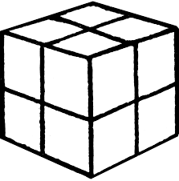
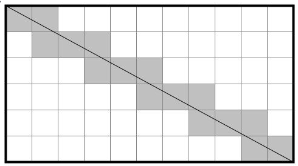
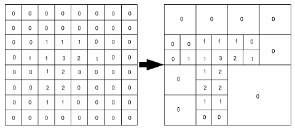
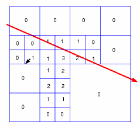

Introduction
Cet article est un devlog parlant du choix d’une structure de données 📚 pour représenter un monde dans mon moteur de voxels Mavoxel 🎲.
Lors du développement d’un projet informatique, on se retrouve très souvent (même toujours) à manipuler une grande quantité de données. Choisir la façon dont on va les stocker est donc une étape importante et risquera d’avoir un fort impact dans la suite des développements. Si dans la plus part des langages haut niveau ce choix se résume à choir entre une list ou une map, en C++ ce choix n’est pas aussi simple. Une list assure la validité des références sur ses objets même après insertion mais ne permet par d’accéder à n’importe quel élément en temps constant et son parcours demande un peu plus de temps qu’une structure de donnée contiguë en mémoire comme un vector.
Ici dans le cadre d’un moteur de jeux, quand il va s’agir de données à envoyer à notre carte graphique, nous allons quasiment exclusivement utiliser des structures contiguë en mémoire, donc le vector de la libraire standard du C++.
Représentation d’un monde de Voxels
Cela étant dit, représenter l’entièreté de notre monde fait de Voxels dans un seul vector serait un petit peu naïf, car cela impliquerait de devoir choisir entre ces deux scénarios :
- Garder l’entièreté de nos Voxels chargés à chaque instant peut importe l’emplacement du joueur.
Ou
- Devoir effectuer des suppression et des insertions en continue dans notre
vectoren fonction de l’emplacement du joueur pour supprimer les Voxels trop éloigné et insérer les Voxels entrant dans la portée du joueur.
Le premier scénario risque de vite être limité à mesure que le monde du joueur grandit et le second scénario risque de poser de gros soucis de performances étant donné que nous travaillons sur un vector qui utilise une mémoire contiguë et que supprimer ou insérer des données sur ce type de mémoire peut être coûteux (réallocation, déplacement des objets déjà inséré…).
Bon de toute façon vous l’aurez sûrement déjà deviné et cette petite introduction était sûrement inutile, mais dans ce type de moteur, le monde est généralement découpé en ce que l’on appelle des Chunks, et c’est donc l’approche que j’ai aussi décidé de suivre.
Chunks
L’idée ici est de diviser notre monde en un ensemble de volume d’une même taille que nous allons nommer des “Chunks”.

Sur cette image, vous pouvez imaginer le grand cube comme étant notre monde et chaque petit cube comme un Chunk.
Ce découpage à plusieurs gros avantages :
- Ne pas avoir à gérer une énorme structure de données mais plusieurs plus petites.
- Charger et décharger facilement et rapidement un ensemble de voxels en fonction de leurs positions par rapport au joueur.
- Pouvoir paralléliser des opérations comme la génération / le chargements des Chunks.
- Pouvoir réduire l’espace de recherche quand on effectue une opération comme un calcul de collision. On sait qu’on n’a besoins d’examiner qu’un seul Chunk et a la limite ses voisins.
Bien-sûr, il y a quand même un inconvénient, l’accès aux voisins d’un voxel n’est pas aussi trivial qu’avec une seule et unique structure de données. En effet, il faut faire quelques vérifications, comme s’assurer qu’on ne sort pas des limites du Chunk, auquel cas il faudra accéder aux données du Chunk voisin pour récupérer le voxel convoité.
Mais je pense que vous en conviendrez avec moi, ce petit inconvénient et complètement éclipsé par tout les avantages que nous offre cette représentation de notre monde.
Bon, nous allons donc découper notre monde en un nombre infini de position entière dans nos 3 axes x, y et z et attribuer à chacune de ces positions un Chunk, que nous générons et afficherons lorsque le joueur sera assez proche, et lorsque ce dernier s’éloignera trop nous n’aurons plus qu’a ne plus afficher ce Chunk, voir le décharger de la mémoire 😀 !
Nous allons aussi devoir définir la taille d’un Chunk. C’est à dire, le nombre de voxels qu’il possédera sur chacun de ses axes. Par exemple, il peut posséder 64 voxels de longueur, 64 voxels de largeur ainsi que 64 voxels de profondeur pour avoir des Chunks carrés. Avec une telle taille, chaque Chunk pourra contenir 64 * 64 * 64 = 262144 voxels ! Il serait aussi possible d’utiliser une taille différent pour un des axe comme l’axe y, ce qui est par exemple fait dans Minecraft.
Ici j’ai décidé d’utiliser une taille uniforme pour chaque axe, car j’aimerais accorder une certaine importance à la verticalité dans mon moteur et donc ne pas limiter l’axe y.
Tout cela étant dit, nous allons maintenant pouvoir commencer à implémenter notre Chunk en C++ !
struct Chunk {
int x, y, z; // La position du chunk dans le monde
int size; // La taille du chunk sur chaque axe
QuelqueChose voxels; // ..? les voxels ?
};
Bon, vous l’aviez sans doute déjà remarqué avant, mais je n’ai toujours pas abordé le stockage des voxels, et ce type de données “QuelqueChose” n’est définitivement pas un type natif du C++ 🙃.
En effet, même si pendant l’introduction j’ai mentionné la possibilité d’utiliser un vector pour stocker les voxels, ce n’est pas la seule possibilité et nous allons même rapidement voir qu’elle est loin d’être optimale !
Stockage des Voxels
Avant d’avancer, essayons de savoir ce que représente réellement un voxel et ce que nous allons vouloir représenter dans notre mémoire.
On peut voir un voxel comme un simple cube. Dans notre monde et donc dans nos Chunks, chaque voxel est de la même taille et possède sa propre position. Sur une position donnée, un voxel prendra l’entièreté de l’espace jusqu’aux limites de sa positions (donc jusqu’aux voxels voisins).
Voilà, donc avec simplement une position, on peut représenter un voxel ! Bon, on aimerait aussi pouvoir donne un style à chaque voxel pour éviter de se retrouver avec des voxels tous identiques. Ici plusieurs possibilités :
- Stocker dans chaque voxel un
Material(UnMaterialreprésente souvent un ensemble de couleur définissant comment un objet devra réagir à la lumière). - Stocker un identifiant définissant le type de surface que représente le voxel (Chaque identifiant étant donc relié à un
Material).
Bien que la première approche permette une totale liberté sur les possibilités de surfaces pour les voxels (et ce même de manière dynamique), sur un terrain nous ne voulons de toute façon pas permettre un nombre infini de type de surfaces.
La seconde approche a l’avantage d’être BEAUCOUP moins coûteuse en place, là ou la première nécessiterais de stocker au moins 3 couleurs et un flottant pour chaque voxels (donc 3 * 3 + 1 = 10 flottants par voxel), la seconde approche permet de ne stocker que un entier pour chaque voxel.
Donc pour résumer, voici à quoi devrait ressembler une structure Voxel :
struct Voxel {
int x, y, z; // Position dans le chunk
int id; // L'identifiant du voxel
};
Maintenant, voyons comment nous allons pouvoir stocker nos voxels dans nos Chunks !
Le simple Vector
Bon, on en parle depuis l’introduction donc vous avez du le voir venir, mais la première approche, la plus simple mais aussi la plus naïve de toutes 🤪, stockers les voxels de notre Chunk dans un vector !
Il nous suffit donc de créer un vector de Voxel :
vector<Voxel> data;
Cette approche possède plusieurs problèmes majeurs.
Premièrement, on ne tire aucunement partie de la forme particulière de notre Chunk qui est un volume cubique pour les informations de positions.
Mais surtout, vérifier la présence d’un voxel sur une position précise au sein d’un Chunk est extrêmement coûteux car il n’y a pas d’autres moyens que de parcourir le vector entier et tester les positions de tous les voxels. Cette opération risquant d’être très courante dans notre moteur (Calculs de collisions, sélection, occlusion ambiante…) nous allons éviter cette modélisation.
La Grille
Comment tirer partie de la forme de notre Chunk qui est en fait un volume cubique ? Et bien en stockant nos voxels sous la forme d’une grille !
L’avantage d’une telle structure de données est qu’il est possible de savoir la présence ou non d’un voxel sur une position dans notre Chunk instantanément contrairement au simple vector !
array<array<array<int, 64>, 64>, 64> data;
ou
int data[64][64][64];
La structure d’une grille permet donc de stocker l’information de la position naturellement via les index des donnés dans la grille, permettant ainsi de n’avoir à stocker que l’identifiants de nos voxel !
Index ?
Pour les personnes qui ne sont pas familières avec ce qu’est un “index”, il s’agit simplement du numéro d’un élément dans nos données. Par exemple si je créé le tableau suivant :
int mon_tableau[5] = [7, 5, 1, 6, 3];
Je peux dire que l’élément 7 est à l’index 0 et l’élément 6 est à l’index 3. Notez que dans la plus part des langages informatiques (et donc en C++), les index commencent à 0.
Dans notre grille, on peut donc par exemple accéder à l’élément en position x = 14, z = 6 et z = 61 en faisant data[14][6][61]. L’accès est donc en temps constant et la vérification de la présence ou non d’un voxel sur une certaine position dans nos Chunks est quasiment instantané (notez qu’on conservera l’identifiant de voxel 0 comme représentant le vide), ce qui est un énorme avantage par rapport au simple vector.
Malheureusement, ça ne peut pas être aussi simple, il y a deux soucis avec cette représentation :
- L’espace : Cette représentation nécessite de devoir initialiser l’entièreté des voxels possible dans notre Chunk, forçant un Chunk vide à prendre autant de place en mémoire qu’un Chunk remplie (même si l’espace est vide, ces positions seront occupé par des identifiants 0 représentant donc ce vide).
- L’accès : Et là vous allez me dire : “Mais je pensais que l’accès était justement le point fort des grilles ?”. Alors oui… mais aussi non. En effet, accéder à l’information “existe-t-il un voxel sur cette position ?” est très rapide, mais accéder à la totalité des voxels est plus compliqué. Il faut pour cela parcourir l’intégralité de la grille et vérifier tout les éléments qui ne sont pas égale à 0.
On remarquera que ces deux soucis ne sont pas présent avec la représentation dans un simple vector. Particulièrement le second, qui risque de ralentir la creation des données d’affichage à envoyer à la carte graphique si on imagine un système de rendu traditionnelle avec donc la creation d’une “mesh” (Pas besoins de s’attarder sur ce terme ici, il faut juste noter qu’on aimerais simplement pouvoir récupérer tous les voxels existant sans devoir parcourir tout les espaces vide de notre grille).
Grille + Vector 🥰
Pour résumer, on aime la grille pour son accès en temps contant à un voxel en fonction de sa position, et on aime le vector pour le parcours de tout les voxels rapide.
Et si on combinais ces deux structures ?
vector<Voxel> data;
int posToIndex[64][64][64];
L’idée ici va être d’avoir notre grille qui va venir stocker l’index des voxels placés et toujours notre vector pour stocker tous nos voxels de façon contiguë !
On peut donc imaginer utiliser ces deux structures comme ceci :
-
Pour insérer un nouveau voxel :
posToIndex[voxel.x][voxel.y][voxel.z] = data.size(); data.push_back(voxel); // push_back permet d'insérer un nouvel élément -
Pour récupérer un voxel en fonction de sa position :
int index = posToIndex[position.x][position.y][position.z]; Voxel voxel = data[index];
Voilà, simple mais efficace ! Bien sûr, on garde toujours l’inconvénient de mémoire de la grille, mais on va dire qu’on est prêt à faire ce sacrifice pour bénéficier des avantages de nos deux structures de données !
Ce mode de stockage était celui que j’utilisais sur le projet Mavoxel au début et était plutôt efficace pour la plus part des opérations dans un système de rendu classique, mais le projet à récemment évolué vers un nouveau mode de rendu, le Ray-Tracing, apportant de nouvelles problématiques.
Ray-Tracing et Structure de données
Bon, sans rentrer dans trop de détails technique (et puis je compte sûrement écrire un article sur l’implémentation du Ray-Tracing dans Mavoxel qui détaillera un peu plus son fonctionnement), j’ai fais le choix de convertir le moteur de rendu en passant d’un rendu “classique” à un rendu en Ray-Tracing.
Rapidement, comment rend-t-on une scène avec des techniques de Ray-Tracing ? On va se center sur notre caméra et on va tirer un “rayon” tout droit pour chaque pixel de notre écran. Ce rayon doit parcourir notre scene jusqu’a rencontrer un obstacle ou bien atteindre une distance limite. La couleur qui sera alors affiché à l’écran dépendra de l’objet touché !
Voici un schéma qui résume assez bien ce fonctionnement :

Bon, pour afficher notre scene nous devons envoyer notre terrain à notre carte graphique puis tester pour chaque pixel si nous rencontrons un voxel ou non.
Ici, le format grille se prête beaucoup plus à la tâche que le format simple vector. Avec un simple vector, nous devrions tester chaque voxel de notre terrain pour chacun des pixel de notre rendu. Un calcul beaucoup trop complexe bien que les cartes graphiques soit optimiser pour effectuer des calculs en parallèles, on parle ici d’une centaine de millier voir de millions de voxels, et donc le même nombre de tests.
Sans trop rentrer dans les détails, en envoyant la grille à notre carte graphique, nous pouvons appliqué un algorithme un peu plus intelligent pour effectuer le Ray-Tracing sur notre monde. Nous allons traverser la grille en avançant dans la direction de la caméra, voxel par voxel.
Voici un petit schéma expliquant rapidement l’idée derrière l’algorithme :

Avec un tel algorithme, on est capable d’atteindre des performance en Ray-Tracing acceptable, avec une distance d’affichage d’environ 256 voxels. Mais même si c’est acceptable, cela reste assez faible. Nous devons trouver un moyen de représenter nos données qui pourrait permettre d’accélérer le Ray-Tracing.
Maintenant, si je vous disais qu’il existe une représentation qui permet une telle prouesse mais qui en plus permet aussi de réduire l’espace occupé par les voxels, vous me croiriez ?
Sparsed Voxel Octree
Oula, c’est quoi ce nom barbare me direz vous ? Et bien ça les amis, c’est une structure de données super ingénieuse, qui va nous permettre de réduire drastiquement nos temps de calculs lors d’un Ray-Tracing mais aussi de réduire la mémoire occupé par nos voxels !
Un Sparsed Voxel Octree (que l’on appellera dorénavant SVO si ça ne vous dérange pas 😉) est une forme particulière d’Octree. Sans rentrer dans les détails, un Octree est une structure de données permettant de diviser un espace en plusieurs sous espace, eux même aussi diviser jusqu’à ce que ces sous espace soit complètement vide ou complètement plein.
Un Octree est donc assez général et peut être utilisé pour représenter l’occupation d’un espace par différents types d’objets. Mais ici nous allons nous intéresser à sa variante, le SVO, qui comme son nom l’indique sert à représenter l’occupation d’un espace par des voxels.
L’idée derrière cette structure de données est la suivante :
- On choisit une taille pour notre SVO qui doit être une puissance de 2 (Par exemple
64). - On divise l’espace de notre SVO en 8 parts égales, séparé au milieu des 3 axes (donc sur la coordonnée
32dans notre exemple). - Pour chacun des sous-espace créé, on vérifie si les voxels qu’il englobe sont tous du même type (Comprendre ici qu’ils ont tous le même identifiant, 0 étant considéré comme du vide). Si c’est le cas, on peut s’arrêter ici, sinon on répète l’étape 2 (Cette fois-ci sur la coordonnée
16, puis8,4et2). - Après toutes ces étapes, on est assuré que chaque sous-espace de notre SVO est entièrement composé du même type de voxel ou de vide.
Bon, ça fais beaucoup, donc rien de mieux qu’un petit schéma pour résumer tout ça !

Et un petit schéma pour imager le passage d’une grille à un SVO :

Je pense que vous pouvez assez clairement voir en quoi cette représentation permet de gagner de la mémoire, mais par-contre, en quoi va-t-elle nous aider pour notre Ray-Tracing ? Et bien, si on reprend notre précédent algorithme qui nous faisais parcourir les voxels de notre grille en suivant la direction de notre caméra, on peut faire la même chose ici mais en sautant directement les portions vide. On peut déjà imaginer une grille qui était totalement vide mais qui prenait quand même 64 itération pour être parcouru par notre algorithme de Ray-Tracing sur sa longueur, là où avec notre SVO et notre version adapté de notre algorithme, cela ne prendra plus que 4 itérations !
Voici un petit schéma pour mieux visualiser la logique derrière ce nouvel algorithme :

Il y a quand même toujours deux inconvénients :
- Toujours l’accès : Et oui, comme pour la grille, récupérer la liste complète des voxels présent dans notre Chunk sans avoir de
vectorest une tâche coûteuse ! Mais étant donné que nous allons remplacer notre mode de rendu classique par le rendu en Ray-Tracing, nous n’aurons plus vraiment besoins de récupérer une telle liste. - Plus lent pour récupérer une position : Contrairement à la grille qui permettait de récupérer instantanément un voxel en fonction d’une position, dans notre SVO cet opération est légèrement plus coûteuse, cela reste beaucoup, beaucoup plus rapide qu’avec un simple
vectoret on pourra négliger ce coût, mais il est quand même important de le mentionner.
Mais malgré ces deux points, la structure de données SVO reste extrêmement intéressante et nous permet d’obtenir les meilleurs performances en temps réel avec l’algorithme de Ray-Tracing, tout en conservant une occupation de la mémoire plus que raisonnable !
Malheureusement et pour votre plus grande tristesse, je n’ai pas de démonstration à vous présenter pour conclure cet article 🥺. En effet il est assez difficile montrer l’implémentation d’une nouvelle structure de données, mais je vais promet que pour le prochain article sur le Ray-Tracing, vous pourrez voir à l’oeuvre toute la puissance du SVO couplé avec un algorithme de Ray-Tracing !
Si vous avez une remarque ou des questions, ou si vous êtes intéressé pour parler un peu plus de l’implémentation du SVO, n’hésitez pas à me contacter, vous pouvez retrouver mon email sur mon site personnel en entrant la commande CONTACT !